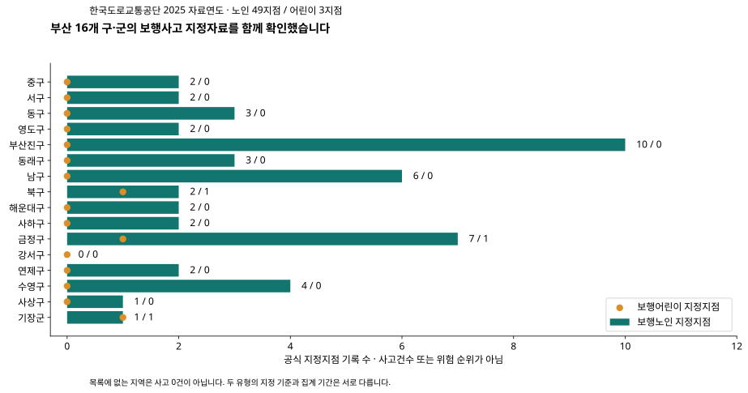
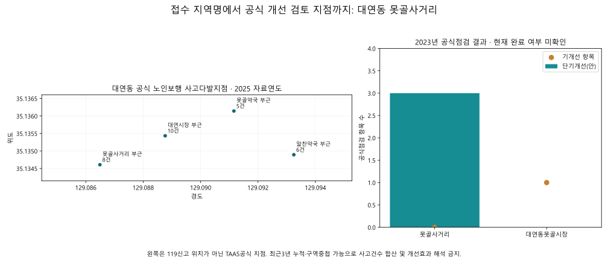
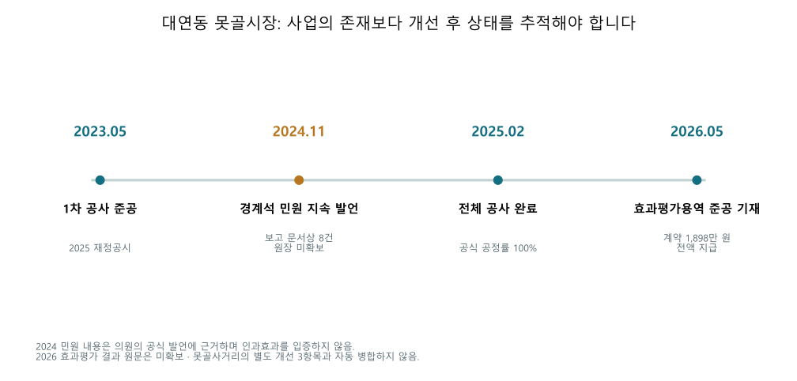
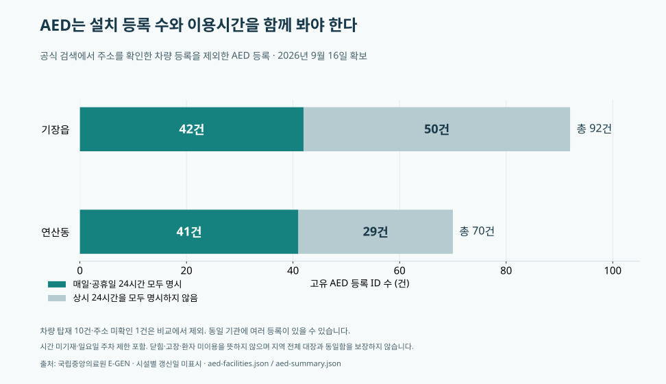
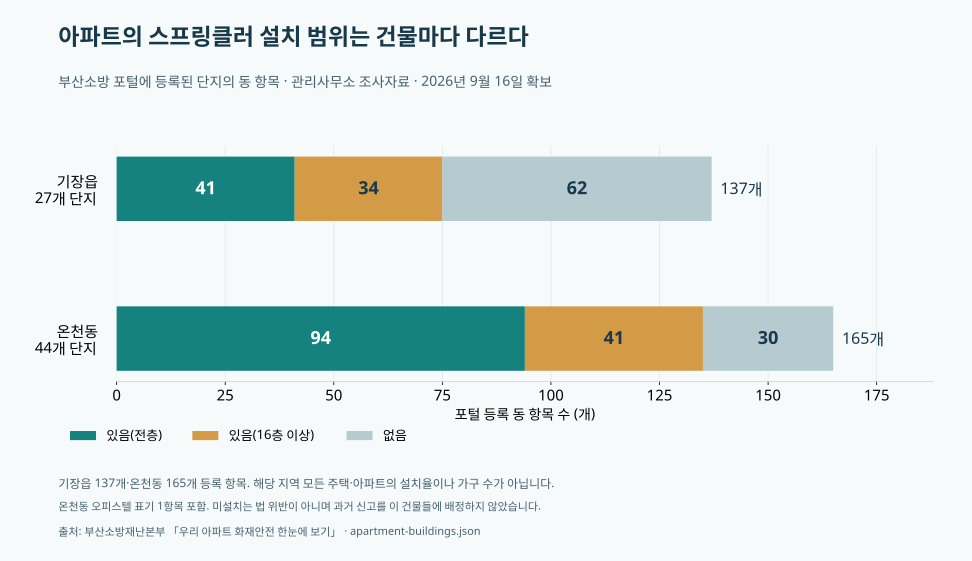
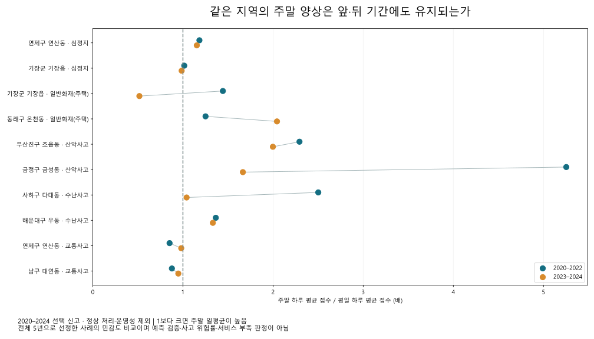

신고 통계에서 실제 지점과 운영 조건까지
같은 신고 유형이라도 지역의 반복 시기와 기존 시설의 이용 조건은 다릅니다. 이번 분석은 5년 신고에서 출발해 공식 현장점검, 시설 운영정보, 사업 완료와 효과평가까지 연결했습니다.
2020–2024 신고 패턴→동별 시간·유형 비교→공식 지점·시설 확인→기존 개선과 후속 결과
신고 분석은 선택한 704,689건을 유지합니다. 주된 사례 비교는 정상 처리·운영성 분류 제외 574,662건에서 선정한 10개 지역·유형 조합입니다. 공식 보완자료는 별도 모집단으로 비교하며 신고에 합산하지 않았습니다.
부산 전체 점검 → 근거가 있는 지점으로 좁혔습니다
16개 구·군의 2020–2025 보행사고 지정기록 301행을 검산했습니다. 2023년 행정안전부 부산 현장점검 14지점에는 단기 개선 122항목과 중장기 개선 19항목이 기록돼 있습니다. 이는 당시의 개선 항목 수이며 현재 미해결 건수가 아닙니다.

다음 표는 2025 자료연도 지정기록입니다.
| 구·군 | 노인 지정지점 | 어린이 지정지점 |
|---|
| 중구 | 2 | 0 |
| 서구 | 2 | 0 |
| 동구 | 3 | 0 |
| 영도구 | 2 | 0 |
| 부산진구 | 10 | 0 |
| 동래구 | 3 | 0 |
| 남구 | 6 | 0 |
| 북구 | 2 | 1 |
| 해운대구 | 2 | 0 |
| 사하구 | 2 | 0 |
| 금정구 | 7 | 1 |
| 강서구 | 0 | 0 |
| 연제구 | 2 | 0 |
| 수영구 | 4 | 0 |
| 사상구 | 1 | 0 |
| 기장군 | 1 | 1 |
실제 개선 항목이 기록된 부산 현장점검 14곳
2023년 점검표의 개선 항목입니다. 지점명과 공식 법정동 코드 대응 범위만 표시하며, 현재 조치 완료 여부는 별도 확인 대상입니다.
| 구·군 | 대응 동명 | 점검 지점 | 단기 항목 | 중장기 항목 |
|---|
| 남구 | 대연동 | 대연동못골시장 부근 | 0 | 0 |
| 남구 | 대연동 | 못골사거리 부근 | 3 | 0 |
| 남구 | 동 미확정 | 남구종합사회복지관 부근 | 2 | 1 |
| 남구 | 동 미확정 | 용호종합사회복지관 부근 | 14 | 1 |
| 동구 | 범일동 | 부산진시장앞교차로 부근 | 5 | 5 |
| 부산진구 | 부전동 | 굿모닝성모안과의원 부근 | 13 | 2 |
| 사하구 | 당리동 | 한비전교회 부근 | 3 | 1 |
| 수영구 | 광안동 | 장대골삼거리 부근 | 19 | 0 |
| 수영구 | 망미동 | 사도행전교회 부근 | 4 | 0 |
| 연제구 | 거제동 | 거제시장 부근 | 17 | 3 |
| 연제구 | 동 미확정 | 부산광역시노인종합복지관 | 9 | 1 |
| 영도구 | 영선동2가 / 영선동3가 | 남항시장사거리 부근 | 16 | 0 |
| 중구 | 남포동5가 | 남포사거리 부근 | 6 | 4 |
| 해운대구 | 반송동 | 반송도서관교차로 부근 | 11 | 1 |
동별 지정자료 · 공식 현장점검 14곳 · 신고 지역명과의 대응 기록
대연동: 반복 지정과 실제 현장 개선 항목을 확인했습니다
못골사거리는 2022–2025 자료연도에 같은 구·법정동 코드·지점명으로 반복 지정됐습니다. 2023년 공식 점검은 교통안전시설 관련 단기 개선 3항목을 기록했습니다. 인구 비중으로 피해자 나이를 추정한 결과가 아니라, 별도 보행노인 사고자료와 현장점검에서 확인한 결과입니다.

대연동 교통 신고 736건을 이 지점의 사고로 배정하지 않았습니다. 지정지역별 사고 수는 기간과 영역이 겹칠 수 있어 서로 합산하지 않습니다. 못골시장과 못골사거리도 구분했습니다.
행정안전부 2023 현장점검
못골시장: 개선사업과 효과평가가 이미 있었습니다
2024년 11월 구의회 발언은 공사 단계 중 턱 걸림·미끄러짐 문제와 의원이 받은 보고문서상 접수 8건을 제시했습니다. 1차 공사는 완료됐지만 전체 사업 준공 전입니다. 개별 사고 원장은 확보하지 않았으며 발언의 추정 30건 이상은 분석 수치로 채택하지 않았습니다.
전체 보행환경 개선사업은 2025년 2월 완료됐습니다. 2026년 효과평가 용역은 공식 계약 자료에 5월 20일 준공일과 1,898만원 전액 지급이 기록돼 있습니다. 효과평가가 없다고 주장하거나 새 평가를 중복 제안할 근거는 없습니다.

보완 방향: 기존 효과평가 결과에 교통 충돌과 보행 중 넘어짐을 구분해 연결하고, 실제 점검 항목별 조치와 이후 결과를 함께 공개하는 방식입니다. 현재 개선 효과와 잔여 위험은 평가 보고서 본문으로 확인할 단계입니다.
2025 사업 완료 공시, PDF 15쪽 · 2024년 의회 발언 · 2026 효과평가 계약
기장읍·연산동: AED는 등록 수와 이용시간이 다릅니다
주소 확인 등록 중 차량 등록을 제외한 AED 등록은 기장읍 92건, 연산동 70건입니다. 모든 요일·공휴일 24시간을 명시한 등록은 각각 42건, 41건입니다. 동일 건물에 여러 등록이 있을 수 있으므로 건물 수로 해석하지 않습니다.

보완 방향: 반복 심정지 신고 지역의 서비스 화면에서 설치 개수보다 이용시간·고정 또는 이동 여부·공식 조회 경로를 함께 제공할 근거가 있습니다. 실내 출입 가능 여부와 작동 상태까지 확인한 뒤 운영시간 조정이나 실외 이전을 판단해야 합니다.
2020–2024 심정지 신고는 기장읍 360건, 연산동 511건입니다. 현재 등록시간과 과거 신고를 비교한 결과가 AED 미이용 환자 수나 신규 설치 필요 수를 뜻하지 않습니다. 국립중앙의료원 E-GEN
기장읍·온천동: 건물별 피난 조건을 추가 확인했습니다
부산소방 공식 포털의 기장읍 27단지·137개 등록 동 항목, 온천동 44단지·165개 등록 동 항목을 실제 조회했습니다. 온천동 목록에는 오피스텔 표기 1항목이 포함됩니다. 전층 스프링클러 표기는 각각 41항목과 94항목이며, 부분층 설치와 없음 표기를 구분했습니다.

보완 방향: 모든 건물에 동일한 피난 안내를 보여주기보다 공식 건물별 피난정보로 연결하는 방식입니다. 포털은 이미 운영 중이므로 새 시설 목록을 만드는 것보다 지역 분석 결과에서 기존 정보를 찾도록 연결하는 데 의미가 있습니다.
이는 동 내부의 별도 건축물 조건 조사입니다. 일반화재(주택)와 고층건물 화재는 신고 분류가 다르므로 주택화재 76·53건의 발생 건물 근거로 결합하지 않았습니다. 미설치 표기를 법 위반이나 미지원 가구 수로 해석하지 않습니다. 부산소방 아파트 화재안전
시간 전략은 5년 합계만으로 정하지 않았습니다
초읍동 산악 신고의 주말 일평균 비율은 전기 2.29배, 후기 2.00배였습니다. 반면 기장읍 주택화재는 1.44배에서 0.52배로 방향이 바뀌었고, 다대동 수난은 2.50배에서 1.04배로 약해졌습니다. 따라서 모든 사례에 같은 주말 중심 대응을 제안하지 않습니다.

토·일 신고 수와 월~금 신고 수를 각 달력 일수로 나눴습니다. 5년 자료로 선정한 사례의 민감도 비교이며 미래 예측 검증은 아닙니다.
| 지역 | 유형 | 2020–22 배율 | 2023–24 배율 | 주말 일평균이 높은 해 |
|---|
| 연제구 연산동 | 심정지 | 1.18 | 1.15 | 4/5년 |
| 기장군 기장읍 | 심정지 | 1.01 | 0.99 | 3/5년 |
| 기장군 기장읍 | 일반화재(주택) | 1.44 | 0.52 | 3/5년 |
| 동래구 온천동 | 일반화재(주택) | 1.25 | 2.04 | 5/5년 |
| 부산진구 초읍동 | 산악사고 | 2.29 | 2.00 | 4/5년 |
| 금정구 금성동 | 산악사고 | 5.25 | 1.67 | 5/5년 |
| 사하구 다대동 | 수난사고 | 2.50 | 1.04 | 4/5년 |
| 해운대구 우동 | 수난사고 | 1.36 | 1.33 | 5/5년 |
| 연제구 연산동 | 교통사고 | 0.85 | 0.98 | 0/5년 |
| 남구 대연동 | 교통사고 | 0.88 | 0.95 | 2/5년 |
이번 결과로 구체화한 차별점
정부는 이미 사고다발지 점검, 아파트 피난정보, AED 검색과 보행사업 효과평가를 수행합니다. 이번 프로젝트의 차별점은 이를 없던 서비스처럼 다시 만드는 데 있지 않습니다.
신고가 반복되는 지역과 시기를 찾고, 그 지역의 실제 이용 조건과 기존 개선 결과를 같은 흐름에서 보여주는 것입니다.
- 교통: 당시 개선 항목 → 사업 범위 → 준공 → 기존 효과평가를 구분해 결과 연결.
- 심정지: AED 등록 수 → 요일별 이용시간 → 공식 조회로 연결.
- 화재: 지역 신고와 별개로 확인한 건물별 피난 조건 → 기존 공식 정보로 연결.
- 산악·수난: 시기별 반복성 변화까지 반영해 획일적인 시간 전략을 방지.
현재 확정한 시설 증설·인력 증원안은 없습니다. 이는 결과를 비워 둔 것이 아니라, 이미 시행된 사업과 아직 확인되지 않은 이용 실태를 구분한 판단입니다. 정보 연결 보완 후보와 실제 운영 변경안은 근거 수준을 나눠 제시합니다.
자료와 재현 방법
신고 2020–2024와 연말 주민 구성은 기존 검증 결과를 재사용했습니다. 이번에는 16개 구·군 보행사고 지정자료, 14곳 공식 점검, AED 시간표, 아파트 건물 조건, 못골시장 후속 사업 기록을 추가했습니다. 보완자료 확보일은 2026-09-16이며 현재 운영 자료를 과거 신고 당시 상태로 취급하지 않습니다.
선택한 신고는 부산 전체 신고의 대표 표본으로 검증되지 않았습니다. 주민 연령은 신고자 연령이 아니며, 위치 미확정 동명은 실제 행정동에 강제 배정하지 않았습니다. 이번 보행노인 피해자 연령 근거는 별도 공식 사고자료입니다.
보고서와 추가 확인 항목 · 기간·처리조건별 비교 · 16개 구·군 전체 지정자료